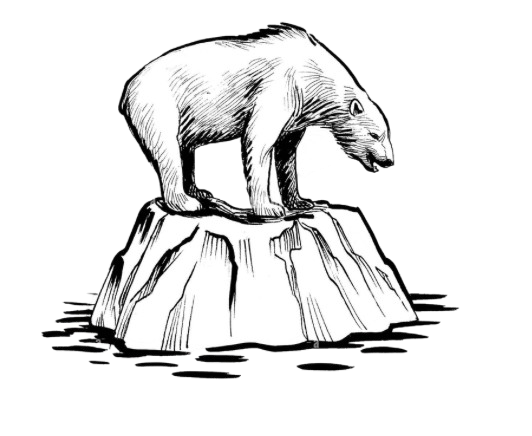

Section 1: Prior Knowledge About the Climate Crisis
Before coming to UCSD, my understanding of climate change was mostly limited to what I learned in high school biology classes. When I thought about climate change, I thought about the greenhouse effect, carbon emissions, and rising global temperatures. I could picture the polar bear sitting on melting ice; however, when it came to questions of responsibility and solutions, my understanding was much less developed.
My idea of climate action came from the familiar, standardized classroom speech: "What can you do to save the planet?" The answer was always some variation of the same list: recycle, turn off the lights when you leave a room, avoid plastic straws at all costs, and reduce your carbon footprint.

Although individuals are somewhat responsible for the climate crisis, there is much more to the story than personal choices. UCSD helped me realize that.
When I enrolled in PSYC 42, I was simply looking for an easy way to fulfill a university requirement, so I did not expect the class to leave much of an impression on me.
Instead, Professor Adam Aron significantly expanded my perspective by connecting the science I was already familiar with to social history, politics, and the psychological barriers that often prevent people from responding to the crisis.
While PSYC 42 gave me a strong foundation of facts, research, and theories about the climate crisis, WCWP 10B gave me the opportunity to actually do something with that knowledge. I was asked to investigate climate issues, write about them, and connect them to my own experiences.
As I worked through my projects, I found myself drawing connections between course concepts and my childhood in Brazil. In particular, I was able to recognize and explain a gap in climate literacy that I had witnessed growing up but had never previously examined.